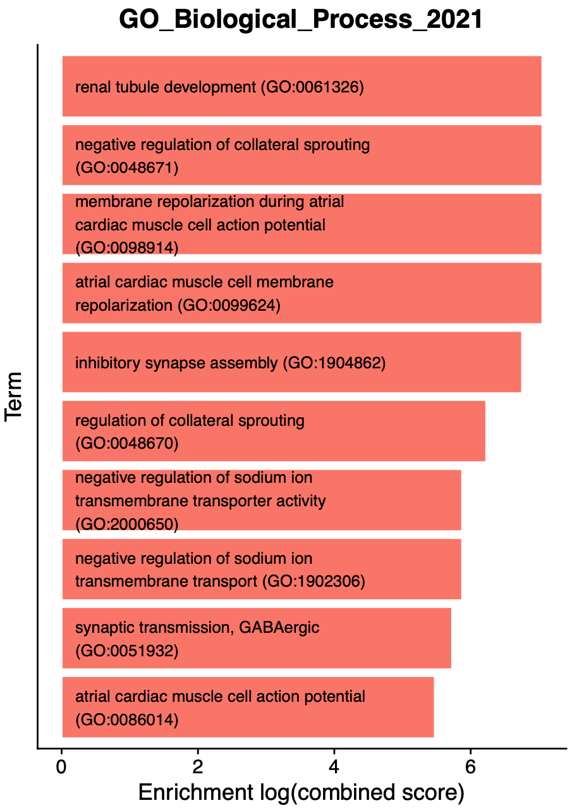
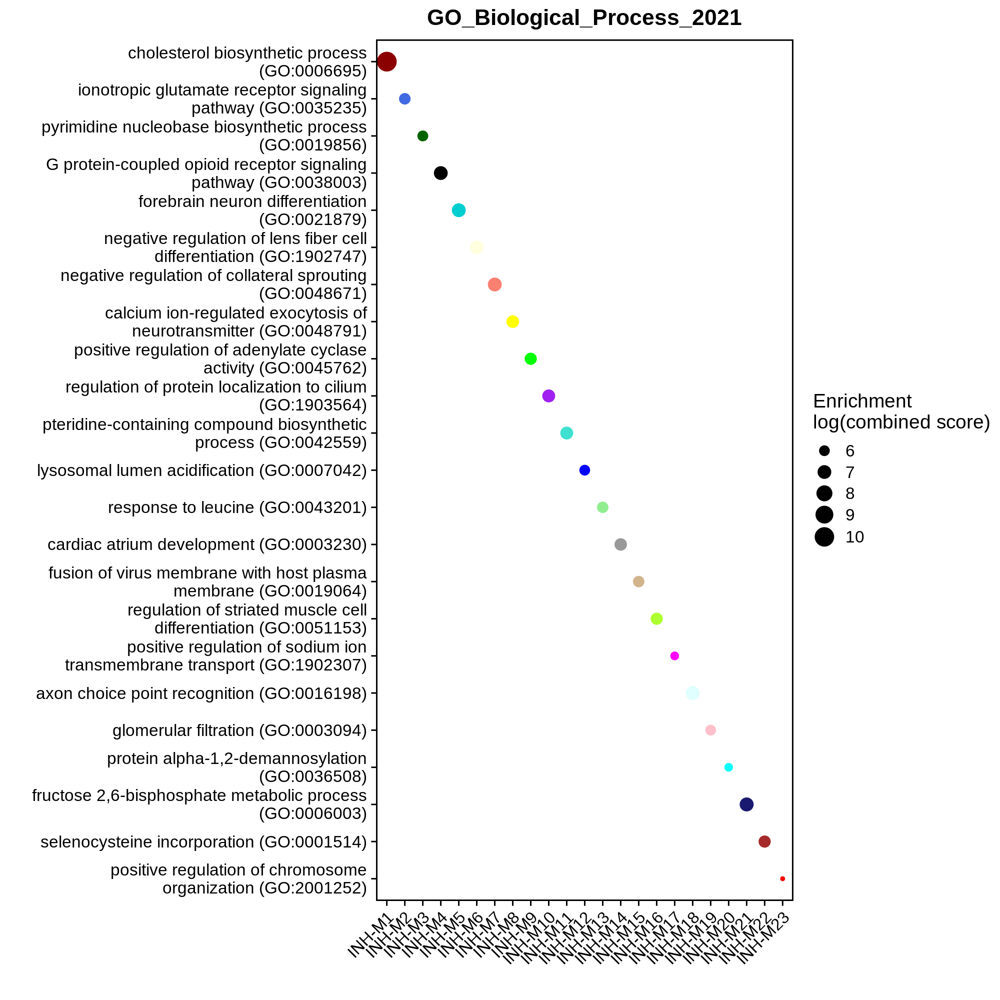
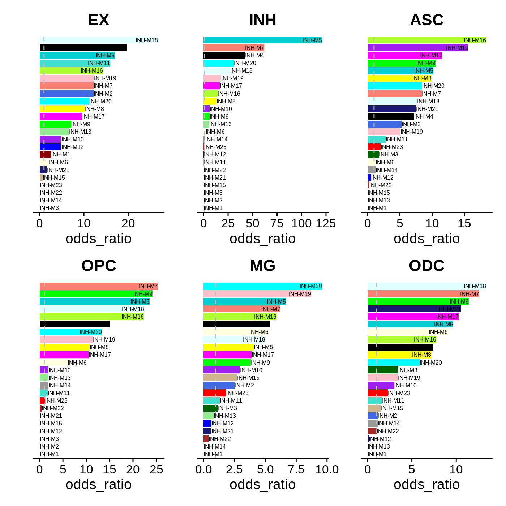
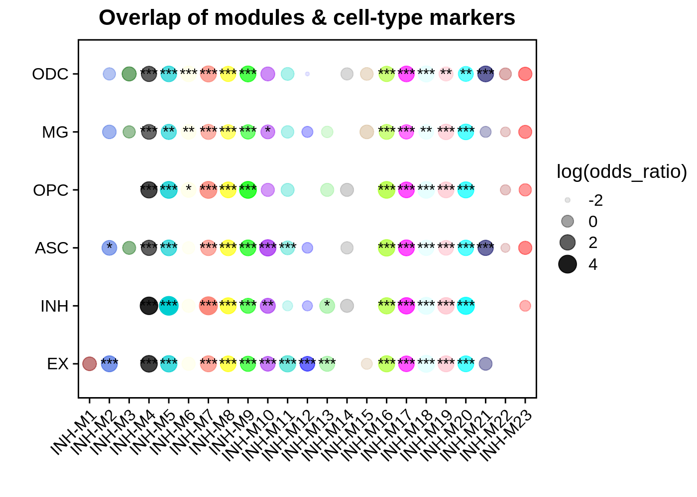

enrichment_analysis.RmdIn this tutorial, we will perform enrichment tests on our hdWGCNA modules. We leverage the R pacakge enrichR to perform enrichment tests on a wide range of curated gene lists. This analysis should point us towards biological processes that our hdWGCNA modules are involved in. Additionally, we perform a gene set overlap analysis to compare the genes in hdWGCNA modules with the marker genes identified using Seurat’s FindAllMarkers function.
First, we first need to load the data and the required libraries.
# single-cell analysis package
library(Seurat)
# plotting and data science packages
library(tidyverse)
library(cowplot)
library(patchwork)
# co-expression network analysis packages:
library(WGCNA)
library(hdWGCNA)
# gene enrichment packages
library(enrichR)
library(GeneOverlap)
# using the cowplot theme for ggplot
theme_set(theme_cowplot())
# set random seed for reproducibility
set.seed(12345)
# load the Zhou et al snRNA-seq dataset
seurat_obj <- readRDS('data/Zhou_control.rds')In this section we discuss how to perform Enrichr enrichment tests and how to visualize the results using hdWGCNA. hdWGCNA includes the function RunEnrichr to compare the set of genes in each module with any of the gene lists hosted by Enrichr. You can take a look at the list of different Enrichr gene lists here. We store the results of the enrichment tests in the hdWGCNA experiment, so can be easily retrieved for downstream analysis or exporting to external applicaitons like Excel. In the following example, we perform the enrichment test with three Gene Ontology datbases:
# enrichr databases to test
dbs <- c('GO_Biological_Process_2021','GO_Cellular_Component_2021','GO_Molecular_Function_2021')
# perform enrichment tests
seurat_obj <- RunEnrichr(
seurat_obj,
dbs=dbs, # character vector of enrichr databases to test
max_genes = 100 # number of genes per module to test
)
# retrieve the output table
enrich_df <- GetEnrichrTable(seurat_obj)The outputs of the Enrichr test are explained in detail here, but we offer a short explanation below for the different columns in enrich_df:
Term: The name of the term (ie biological process, etc).Overlap: The fraction of genes overlapping between the module and the gene list.P.value: Fisher’s exact test p-value.Adjusted.P.value: Benjamini-Hochberg multiple testing correction for the Fisher’s exact test p-values.Odds.Ratio: statistic to quantify the association between the gene list in the current module and the gene list for the current Term.Combined.Score: natural log of the p-value multiplied by the z-score, where the z-score is the deviation from the expected rank.Genes: semicolon delimited list of gene symbols for the overlapping genes.db: the name of the Enrichr gene list.module: the name of the hdWGCNA module.Now that we have done the enrichment tests, there are several ways we can go about visualizing the results.
EnrichrBarPlot
hdWGCNA includes the function EnrichrBarPlot to summarize the results of every Enrichr database and every module. This function outputs a .pdf figure for each module, containing a barplot showing the top N enriched terms. The following example will plot the top 10 terms in each module and will output the results to a folder called enrichr_plots.
# make GO term plots:
EnrichrBarPlot(
seurat_obj,
outdir = "enrichr_plots", # name of output directory
n_terms = 10, # number of enriched terms to show (sometimes more show if there are ties!!!)
plot_size = c(5,7), # width, height of the output .pdfs
logscale=TRUE # do you want to show the enrichment as a log scale?
)The following bar plot is a single example of the EnrichrBarPlot output:

Interpreting Enrichr results
Each of the enrichment bar plots are colored by the module’s unique color, and each term is sorted by the enrichment (combined score). We encourage users to carefully inspect the results of the enrichment tests, and use prior biological knowledge before jumping to conclusions. In this example, we see some terms that make sense for inhibitory neurons, such as “inhibitory synapse assembly” and “synaptic transmission, GABAergic”. On the other hand, we see several cardiac related terms that are realistically not at all related to our system in this example (human brain). Many genes take part in distinct biological processes in different tissues within the same organism, which leads to enrichment results like this.
EnrichrDotPlot
hdWGCNA includes an additional visualization function for enrichment results, EnrichrDotPlot, which shows the top results for one Enrichr database in each module. In the following example, we plot the top term in the GO_Biological_Process_2021 database.
# enrichr dotplot
EnrichrDotPlot(
seurat_obj,
mods = "all", # use all modules (this is the default behavior)
database = "GO_Biological_Process_2021", # this has to be one of the lists we used above!!!
n_terms=1 # number of terms for each module
)
In this plot, each dot is colored by the module’s unique color, and the size of each dot is scaled by the enrichment of the term.
In this section we discuss how to compare hdWGCNA modules with cluster or cell-type marker genes. First we use the Seurat function FindAllMarkers to identify the marker genes in each cell type, and then we use the hdWGCNA function OverlapModulesDEGs to overlap the modules and the DEGs.
# compute cell-type marker genes with Seurat:
Idents(seurat_obj) <- seurat_obj$cell_type
markers <- Seurat::FindAllMarkers(
seurat_obj,
only.pos = TRUE,
logfc.threshold=1
)
# compute marker gene overlaps
overlap_df <- OverlapModulesDEGs(
seurat_obj,
deg_df = markers,
fc_cutoff = 1 # log fold change cutoff for overlap analysis
)Notably, the results from OverlapModulesDEGs are currently not stored in the hdWGCNA experiment. This is partially because this test is extremely fast to run, and partially because there are many different sets of DEGs that one could compare their modules to. The overlap_df contains the following columns:
module: the name of the hdWGCNA module.group: the name of the RNA-seq cluster / cell-type / etc.color: the module’s unique color.odds_ratio: statistic to quantify the association between the gene list in the current module and the gene list for the marker genes.pval: Fisher’s exact test p-value.fdr: False Discovery Rate (FDR) multiple testing correction for the Fisher’s p-values.Significance: Character vector indicating the significance level of the overlap.Jaccard: Jaccard index for the two gene lists.size_intersection: the number of genes that overlap between the two gene lists.hdWGCNA includes two functions to visualize the results from OverlapModulesDEGs, OverlapDotPlot and OverlapBarPlot.
Here we demonstrate using OverlapBarPlot to visualize the results of OverlapModulesDEGs. This function creates a bar plot for each cell type showing one of the overlap statistics for each module.
# overlap barplot, produces a plot for each cell type
plot_list <- OverlapBarPlot(overlap_df)
# stitch plots with patchwork
wrap_plots(plot_list, ncol=3)
Next we use OverlapDotPlot to visualize the overlap results in a single plot.
# plot odds ratio of the overlap as a dot plot
OverlapDotPlot(
overlap_df,
plot_var = 'odds_ratio') +
ggtitle('Overlap of modules & cell-type markers')
Each dot is colored by the hdWGCNA module’s unique color, and the size of the dot is scaled by the overlap statistic. We show FDR significance levels as stars on top of the dots.